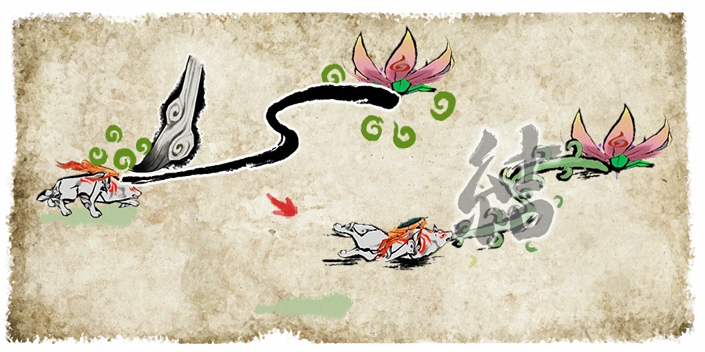
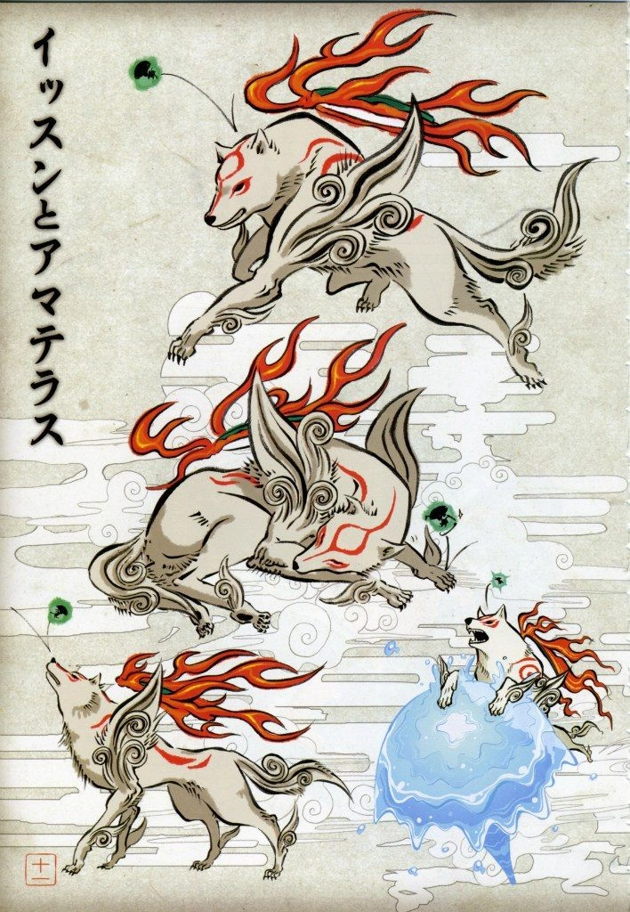
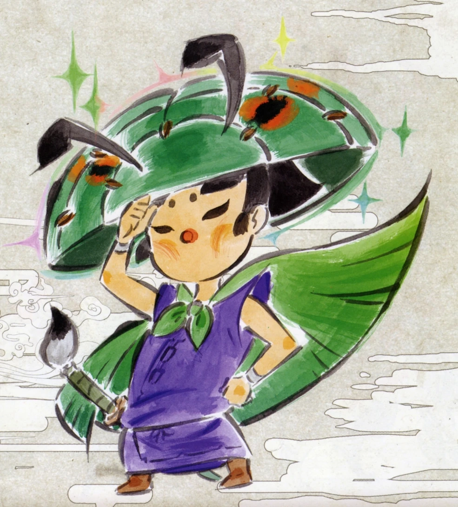
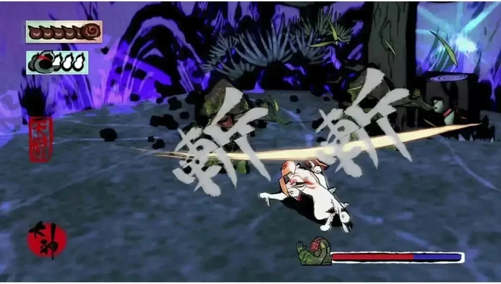

SINOPSIS
El juego está ambientado en Nippon basado en la historia clásica japonesa, y comienza con un flashback a eventos 100 años antes del presente del juego, y describe cómo Shiranui , un lobo blanco puro, y Nagi , un espadachín, juntos lucharon contra el demonio de ocho cabezas Orochi para salvar a Kamiki Village y a la doncella Nami , la amada de Nagi. Shiranui y Nagi no pueden derrotar a Orochi, pero logran sellar al demonio. En el presente del juego, Susano , un descendiente de Nagi y autoproclamado guerrero más grande, rompe el sello de Orochi debido a que no cree en la leyenda, y Orochi escapa y maldice las tierras, drenando la vida de todo ser vivo. Sakuya , el duende del bosque y guardián de Kamiki Village, invoca a Amaterasu, la diosa del sol, conocida por los aldeanos como la reencarnación del lobo blanco Shiranui, y le ruega que elimine la maldición que cubre la tierra. Acompañado por el artista Issun (un Poncle de una pulgada de alto) comienza un viaje por todo Nippon para restaurar la luz y la belleza en un mundo sumido en la oscuridad.
JUGABILIDAD
Okami es un juego de acción y aventuras que combina elementos de la mitología japonesa con una jugabilidad innovadora. El juego se centra en la exploración de un mundo abierto, la resolución de acertijos y la lucha contra enemigos.

MECÁNICAS DE JUEGO
-Pinceladas celestiales: Amaterasu puede utilizar su pincel para crear y controlar la naturaleza, como ríos, viento y flores. Esto le permite resolver acertijos y derrotar a enemigos de manera creativa.
- Exploración: El juego cuenta con un mundo abierto que los jugadores pueden explorar libremente, descubriendo secretos y misiones secundarias.
- Combate: Amaterasu puede luchar contra enemigos utilizando su pincel y habilidades especiales, como la capacidad de crear explosiones de viento o llamaradas de fuego.

PERSONAJES PRINCIPALES
AMATERASU
Amaterasu es la diosa del sol de Japón y protagonista jugable de Okami. Amaterasu adopta la forma de un lobo blanco con marcas carmesí en todo el cuerpo, una cola con forma de pincel de caligrafía (así es como se usa el Pincel Celestial ) y un Instrumento Divino flotando sobre su espalda.

ISSUN
Un joven artista que se une a Amaterasu en su viaje y la ayuda a restaurar la luz y la belleza en el mundo. Issun es un Poncle , una raza de humanoides diminutos, lo que significa que tiene el tamaño de un insecto. Al igual que todos los Poncles adultos, tiene las proporciones de un niño humano y brilla con un verde bioluminiscente. Debido a su diminuta estatura, la mayoría de la gente ve a Issun como una pequeña criatura brillante parecida a un insecto, con solo su sombrero mostrando algún detalle

DESAFÍOS
- Dificultad: El juego puede ser desafiante en algunos momentos, especialmente en las batallas contra jefes y en la resolución de acertijos.
- Limitaciones: Algunas de las habilidades de Amaterasu están limitadas por la cantidad de tinta disponible, lo que puede hacer que los jugadores deban gestionar sus recursos de manera efectiva.
